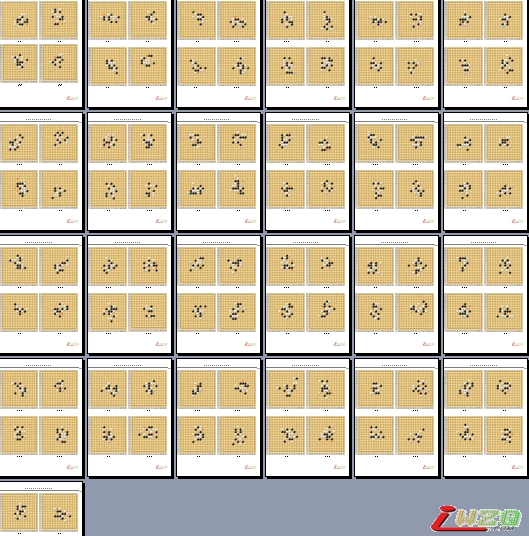

【高飞整理】坂田白先胜100题，爱五子棋网首发
#1 【高飞整理】坂田白先胜100题，爱五子棋网首发 作者：有志青年 发表时间：2011-9-8 13:58:27

［ 丹尼 于 2011-9-8 14:32:00 时花20金币送鲜花一朵］
［ 虎哥 于 2011-9-8 15:45:33 时花20金币送鲜花一朵］
［ 雨过云舒 于 2011-9-8 19:04:31 时花20金币送鲜花一朵］
［ 满天星 于 2011-9-9 9:35:50 时花20金币送鲜花一朵］
［ 中中 于 2011-9-10 11:20:10 时花20金币送鲜花一朵］
［ 隐士 于 2011-9-11 8:31:03 时花20金币送鲜花一朵］
［ 山城刀客 于 2012-5-5 13:03:14 时花20金币送鲜花一朵］
#2 Re:【高飞整理】坂田白先胜100题，爱五子棋网首发 作者：丹尼 发表时间：2011-9-8 14:31:42
谢谢老师~~#3 Re:【高飞整理】坂田白先胜100题，爱五子棋网首发 作者：小元 发表时间：2011-9-8 16:47:33
谢谢有志#4 Re:【高飞整理】坂田白先胜100题，爱五子棋网首发 作者：有志青年 发表时间：2011-9-8 17:25:42
要谢谢高飞老师是真的哟
#5 Re:【高飞整理】坂田白先胜100题，爱五子棋网首发 作者：玩不过就跑 发表时间：2011-9-8 17:43:04
老师辛苦
#6 Re:【高飞整理】坂田白先胜100题，爱五子棋网首发 作者：佛心诚 发表时间：2011-9-8 18:18:26
辛苦了，谢谢老师的奉献精神和对五子棋做的一切#7 Re:【高飞整理】坂田白先胜100题，爱五子棋网首发 作者：孙弈淏 发表时间：2011-9-8 20:54:23
那位高手有答案啊？#8 Re:【高飞整理】坂田白先胜100题，爱五子棋网首发 作者：dyccj 发表时间：2011-9-8 21:11:09
谢谢哈，这下省事儿了。
#9 Re:【高飞整理】坂田白先胜100题，爱五子棋网首发 作者：伤情路 发表时间：2011-9-9 8:44:19
高飞老师对五子棋的贡献确实很大，又开课，又出视频，还帮我们整理习题
#10 Re:【高飞整理】坂田白先胜100题，爱五子棋网首发 作者：满天星 发表时间：2011-9-9 9:40:20
谢谢~
#11 Re:【高飞整理】坂田白先胜100题，爱五子棋网首发 作者：启蒙 发表时间：2011-9-9 11:07:06
感谢高飞老师的辛苦工作～
小建议：如果把禁手提示去掉是不是更好一些？
#12 Re:【高飞整理】坂田白先胜100题，爱五子棋网首发 作者：雨碎红尘 发表时间：2011-9-9 12:52:16
 谢谢高飞老师的分享~
谢谢高飞老师的分享~
#13 Re:【高飞整理】坂田白先胜100题，爱五子棋网首发 作者：启蒙 发表时间：2011-9-10 8:30:42
第10题好像错了吧、我看了半个小时没看出来，用黑石算也没结果。。
找错给威望哈～～
#14 Re:【高飞整理】坂田白先胜100题，爱五子棋网首发 作者：有志青年 发表时间：2011-9-10 8:53:35
第十题没有问题#15 Re:【高飞整理】坂田白先胜100题，爱五子棋网首发 作者：高飞 发表时间：2011-9-10 8:55:59
你是看我编辑的第10题还是下面五子棋习题的原题，如果是原题的话，肯定是错的，下载这个里面的没有错， 正确答案我做成了五子棋解题视频，五子棋解题方法与技巧(11)的最后一个题目。［ 江西ゞ落叶 于 2011-9-10 9:46:38 时花20金币送鲜花一朵］
#16 Re:【高飞整理】坂田白先胜100题，爱五子棋网首发 作者：江西ゞ落叶 发表时间：2011-9-10 9:47:38
下载了，顺便送朵花给老师
#17 Re:【高飞整理】坂田白先胜100题，爱五子棋网首发 作者：启蒙 发表时间：2011-9-10 13:58:49
恩。明白了，题没问题。不解的是，我没算出来可以理解，黑石连这三步取胜都没看出来，软件有时候真的靠不住啊
#18 Re:【高飞整理】坂田白先胜100题，爱五子棋网首发 作者：可爱梦 发表时间：2011-9-11 13:15:23
我还没做完、
嗷呜呜
#19 Re:【高飞整理】坂田白先胜100题，爱五子棋网首发 作者：网络小隐 发表时间：2011-10-23 16:48:53
谢谢啊 哪里还有这种打包的题啊
#20 Re:【高飞整理】坂田白先胜100题，爱五子棋网首发 作者：欧阳子笛 发表时间：2011-12-28 14:55:54
真的很不错哦，#21 Re:有志青年【==【高飞整理】坂田白先胜100题，爱五子棋网首发==】 作者：侃天下 发表时间：2012-5-5 12:01:20
非常感谢
#22 Re:【高飞整理】坂田白先胜100题，爱五子棋网首发 作者：山城刀客 发表时间：2012-5-5 13:11:40
感谢高老师倾情奉献习题，我做了下，题目还是不错的，在此我建议大家人脑去算，要使用软件辅助就不太有意义了。#23 Re:【高飞整理】坂田白先胜100题，爱五子棋网首发 作者：林导弹 发表时间：2012-5-10 21:15:21
感谢，收下了。。。